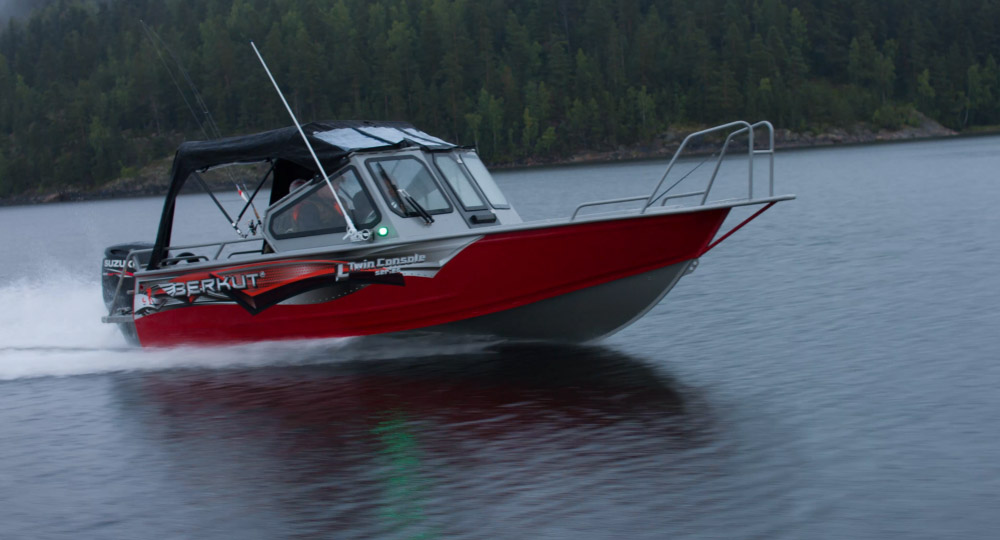

Катер Berkut L-TwinConsole (Беркут L-TwinConsole)
Трудно сказать для чего подходит катер Беркут L-TwinConsole. У этого катера (новинка 2015 года) многоцелевое назначение. Во-первых — это рыбалка, причем любая. Надводная и подводная, спиннинг, тролинг, поплавок, все что угодно. Во-вторых, на катере можно весело проводить время с семьей и друзьями, наслаждаясь водными просторами. А если доукомплектовать катер, то можно быстро переоборудовать его под экстремальный отдых, встать на водные лыжи, заняться вейкбордингом или на ватрушках прокатить своих детей.
Катер Беркут L-TwinConsole — по классификации типа Dual consol — это две консоли и полноценный большой кокпит (два кресла и кормовой диван). В носовой зоне присутствует сиденье-полупалуба, пристроенное к форпику. Пассажировместимость катера впечатляет — 6 человек. Столь высокий результат, достигнут благодаря открытому просторному кокпиту и отличной организации кормовой части. Ветровые стекла, не создающие искажений, и прочная дверь обеспечивают пассажирам в кормовой части катера прекрасную защиту от брызг. Запас прочности консолей, релингов и ветровых стекол, более чем достаточен для безопасного нахождения на борту катера. Большие вместительные рундуки позволяют перевозить значительные объемы багажа. Два кормовых леера и высокие носовые леера дают безопасность, и удобство выхода на берег при швартовке. Тент на стойках, не мешает, в сложенном положении и позволяет быстро воспользоваться им при необходимости. Нескользящее покрытие (опция), не сложно содержать в чистоте, при этом оно обеспечивает хорошее сцепление с обувью в любую погоду. Комфорт для путешественников довершают мягкие накладки для сидений (опция), изготовленные из материалов хорошего качества.
Технические характеристики катера:
| Параметр | Berkut L-TwinConsole |
|
Длина корпуса |
5,1 м |
|
Габаритная длина |
5,65 м |
|
Максимальная ширина |
2.05 м |
|
Высота борта на миделе |
0.91 м |
|
Минимальная высота |
0.45 м |
|
Килеватость на транце |
18° |
|
Грузоподъемность (с учетом мотора) |
600 кг |
|
Пассажировместимость |
6 чел |
|
Сухой вес |
420 кг |
|
Высота стандартного транца |
0,51 м |
|
Рекоменд. мощность мотора |
70 - 115 л.с. |
|
Толщина днища |
4 мм |
|
Толщина борта |
3 мм |
|
Максимальная масса мотора |
190 кг |
|
Расчетная высота волны |
0,8 м |
Стандартное оборудование:
- Сварной, запененный корпус;
- Пайолы из ламинированой фанеры с резиновой окантовкой;
- Порошковая покраска корпуса цветом RAL 9007;
- Остекление (Триплекс);
- Электроподготовка(Предохранители, проводка, ключ массы, клемы АКБ, площадка крепления АКБ);
- Низкие носовые леера;
- Алюминиевая носовая банка с пластиковой крышкой;
- Площадка для крепления датчика эхолота;
- Комплект рулевого управления (Штурвал пластик, редуктор, штуртрос);
- Стационарный вварной алюминиевый бак на 100 литров с датчиком уровня топлива производства США;
- Электрическая осушительная помпа, 1500 галлонов/час.;
- Два больших бардачка в кормовой части;
- Два малых бардачка в носовой части;
- Вварной якорный ящик с алюминиевой крышкой;
- Доптранец;
- Сварной алюминиевый трап;
- Опциональная площадка под роульс;
- Леерное ограждение кокпита;
- Дверца между консолями;
- Дверца в рамке втекла;
- Вспомогательная ступенька под носовым криналином;
- Вварной держатель для наживки на дверце между консолями;
- Пластиковая ручка в консоли пассажира;
- Боксы на передней части консолей;
- Розетка прикуривателя в блоке кнопок;
- Пластиковая заливная горловина бака;
- Пластиковые петли крепления крышек и дверей;
- Блок кнопок (3 клавиши с прикуривателем);
- 2 пластиковых подстаканника в ступеньке;
- Капитанское поворотное на фирменной стойке кресло капитана;
- Капитанское на фирменной стойке кресло пассажира;
- Комбинированный в носу, топовый ходовые огни;
- Перчаточный ящик в консоли пассажира с пластиковой крышкой;
- Опциональное оснащение кормовой части кокпита;
- Опциональный маридек на пайолах;
- Опциональные мягкие накладки на короба бортов;
- Опциональное нескользящее покрытие на консоли;
- Опциональный откидной столик;
- Опциональный звуковой сигнал;
- Опциональный комплект мягких накладок на носовую банку;
- Пластиковая кормовая заглушка трюмной помпы;
- Кормовые площадки на транце;
- Закладная под стойку буксировки лыжника;
Межнаборное пространство заполняется полиуретановыми блоками плавучести общим объемом около 600 литров. Это обеспечивает положительную плавучесть, шумоизоляцию и прочность, т. е. при заполнении катера забортной водой, он останется на плаву и не утонет. Бортовая линия усилена привальным брусом. В неподвижном состоянии, катер очень устойчив и не дает повода для сомнений даже при внушительных волнах за бортом. Легко идет по воде (выходит на глиссер), хорошо входит в повороты, не заваливается и хорошо держит курс. Мягко и без ударов проходит гребни волн, даже на полном ходу.


{kind=link}
{kind=link}
{kind=link}
{kind=link}
{kind=link}
{kind=link}
{kind=link}
{kind=link}
{kind=link}
{kind=link}
{kind=link}